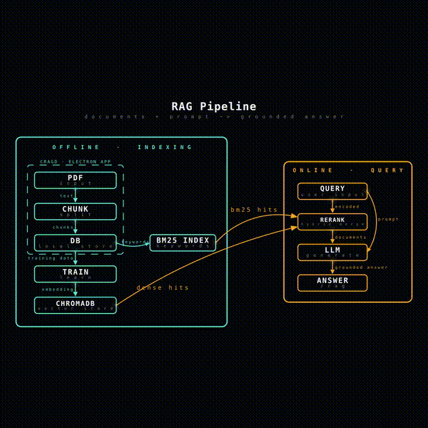

PDF 문서를 파싱해 BM25+DPR 하이브리드 검색으로 근거 문서를 찾고, 그 문서를 프롬프트에 넣어 온프레미스 sLM이 답하게 하는 RAG 챗봇을 3인 팀(LLG)으로 개발한 캡스톤 프로젝트입니다. 그중 RAG 개발 및 문서 임베딩, 문서 업로드용 데스크톱 앱 CRAGD(Electron) 빌드를 맡았습니다.
서비스되는 LLM은 정보를 학습하기 때문에 기업에서 외부에 공개되어서는 안 되는 문서 검색에 사용할 수 없습니다. 오픈소스로 공개된 LM·LLM 또한 문서 정보를 학습해야만 정확한 답변을 할 수 있어 방대한 학습 비용이 발생합니다. 이를 해결하기 위해 정확한 문서 내용을 검색해 근거로 함께 제공하면 답변 정확도를 개선할 수 있고, 특정 도메인에 묶이지 않는 시스템이 필요하다고 판단해 이 프로젝트를 시작했습니다. 보안 문서를 다루는 특성상 문서 내용이 외부로 전송되지 않아야 한다는 제약도 있었습니다.

[오프라인 · 인덱싱] (CRAGD, 자체 Electron 앱 안에서 수행)
PDF 업로드 ─▶ 청킹(Chunking) ─▶ PostgreSQL(Text 테이블)
│
┌────────────────┼────────────────┐
▼ ▼
DPR Context Encoder Pyserini(BM25 인덱스)
│
▼
ChromaDB (벡터·텍스트·메타데이터 함께 저장)
[온라인 · 질의응답]
사용자 질의 ─┬─▶ DPR Question Encoder ─▶ ChromaDB(dense 검색, top-30)
└─▶ Pyserini(BM25 sparse 검색, top-30)
│
RRF(Reciprocal Rank Fusion)로 결합 → top-10
│
Cross-Encoder Reranking → top-5
│
(검색된 문서 + 사용자 원본 질의) ─▶ 온프레미스 sLM(Qwen2.5-7B, 4bit)
│
최종 답변 + 이미지
[Semantic Cache]
질의 임베딩과 distance < 0.05인 과거 질의가 있으면 캐시된 답변을 즉시 반환
| 항목 | 검토한 후보 | 최종 선택 | 선택 이유 |
|---|---|---|---|
| 검색 방식 | Dense-only(DPR 단독) / Sparse-only(BM25 단독) / Hybrid(DPR+BM25) | Hybrid | Dense는 의미 기반 검색이라 표현이 다른 질의에도 강하지만 정확한 키워드·고유명사 매칭에 약하고, Sparse(BM25)는 그 반대입니다. 문서 검색 특성상 사용자 질의에 특정 용어·수치가 자주 섞여 있어 둘을 RRF로 결합해 recall을 넓히고, reranker로 precision을 다시 좁히는 2단계 구조가 단일 방식보다 안정적이라고 판단했습니다. |
| 벡터 스토어 | FAISS / Milvus·Pinecone 같은 외부 매니지드 벡터DB / ChromaDB | ChromaDB | FAISS는 벡터 인덱스만 제공해 문서 텍스트·메타데이터를 별도 DB에서 관리하고 FastAPI에 직접 래핑해야 하는 부담이 있었습니다. Milvus·Pinecone 등은 별도 클러스터 운영/외부 SaaS 의존이 필요해 학내망·온프레미스로 운영하는 캡스톤 환경과 맞지 않았습니다. ChromaDB는 벡터·텍스트·메타데이터를 한 번에 저장하고 Docker/Kubernetes에 컨테이너 하나로 바로 배포할 수 있어 운영 부담이 가장 적었습니다. |
| BM25 엔진 | rank_bm25(순수 Python) / Pyserini(Lucene 기반) | Pyserini | 초기 실험(doc_retrieval/utils/bm25.py)은 rank_bm25로 빠르게 프로토타이핑했지만, 문서 수가 늘어나면 Python 구현은 인덱싱·검색 속도가 느려집니다. 실제 서비스(rag_server)에는 Java Lucene 기반이라 대규모 인덱스에서도 빠르고, 한국어 CJK 분석기를 기본 지원하는 Pyserini로 옮겼습니다. |
| Reranker | Cross-encoder(ms-marco-MiniLM) / ColBERT류 late-interaction / reranker 미사용 | Cross-encoder | ColBERT류는 정확도는 높지만 문서마다 토큰 단위 임베딩을 저장해야 해서 저장 비용·구현 복잡도가 컸습니다. Reranker 없이 하이브리드 top-k만 바로 쓰는 방식은 구현이 가장 간단하지만 정밀도가 부족했습니다. Cross-encoder는 query-document 쌍을 직접 비교해 정확도가 높으면서도, top-10 정도의 적은 후보에만 적용하면 추론 비용이 감당할 만한 수준이라 채택했습니다. |
| 응답 생성 LLM | 클라우드 API(OpenAI) / 온프레미스 sLM(Qwen2.5-7B-Instruct) | 온프레미스 sLM | 보안 문서를 다루는 시스템 특성상 문서 내용이 외부 API로 전송되지 않아야 한다는 요구가 있었고, 반복 호출 시 API 비용도 누적됩니다. 4bit 양자화한 Qwen2.5-7B-Instruct를 로컬 GPU에 올려 서비스망 밖으로 데이터가 나가지 않도록 했습니다. 초기 개발·성능 비교 단계에서는 구현이 간단한 OpenAI API로 먼저 파이프라인을 검증했고, 이후 실제 배포에서 sLM으로 전환했습니다. |
처음에는 DPR 단독으로 top-5를 바로 검색했는데, 표현이 다르지만 의미가 비슷한 문서는 잘 찾아도 특정 용어·수치가 그대로 포함된 질의에는 정밀도가 떨어지는 경우가 있었습니다. BM25(Sparse)와 DPR(Dense)로 각각 top-10을 검색해 RRF로 결합하고, Cross-Encoder Reranking으로 top-5를 다시 추리는 2단계 구조로 바꿔 recall과 precision을 함께 개선했습니다.
FAISS는 벡터만 저장하는 라이브러리라 문서 텍스트·메타데이터(표·이미지 토큰 포함)를 별도로 관리하고 FastAPI 서버에 직접 wrapping해야 하는 부담이 있었습니다. ChromaDB로 전환해 벡터·텍스트·메타데이터를 함께 저장하도록 구조를 바꾸자, 쿠버네티스 Pod 단위로 바로 배포할 수 있게 되었고 Grafana 같은 모니터링 툴과의 연동도 쉬워져 운영 부담이 크게 줄었습니다.
Minikube 환경에서 Docker 브리지 네트워크 충돌로 이미지 빌드가 실패하고, ErrImageNeverPull/ImagePullBackOff 오류와 서비스 간 DNS 해석 실패가 반복됐습니다. Minikube 내부 Docker 데몬에서 직접 이미지를 빌드해 배포하도록 바꾸고, 불일치하던 서비스명을 수정(rag → rag-server)했으며, 내부 통신은 ClusterIP, 외부 접근은 NodePort로 분리해 해결했습니다.
같거나 비슷한 질의가 반복될 때마다 매번 검색+재순위화+LLM 추론 전체를 다시 수행하는 건 비효율적이었습니다. LLMCache 클래스를 구현해 질의를 임베딩으로 벡터화한 뒤 ChromaDB 기반 semantic cache에서 유사도를 검색하고, distance가 0.05보다 작은 유사 질의가 있으면 캐시된 응답을 즉시 반환하도록 했습니다. 테스트(TC-002)에서 새로 생성할 때보다 응답 속도가 유의미하게 빨라졌음을 확인했습니다.
비정형 문서의 복잡한 표·수식·다단 레이아웃 때문에 PDF 파싱 예외 케이스가 반복적으로 발생해 일정이 지연되자, 모듈별 일정에 버퍼를 두고 기능 단위 병렬 개발이 가능하도록 모듈을 재정비했습니다. 2주 단위 중간 점검 회의를 도입해 리스크를 조기에 파악하는 체계로 전환했습니다.